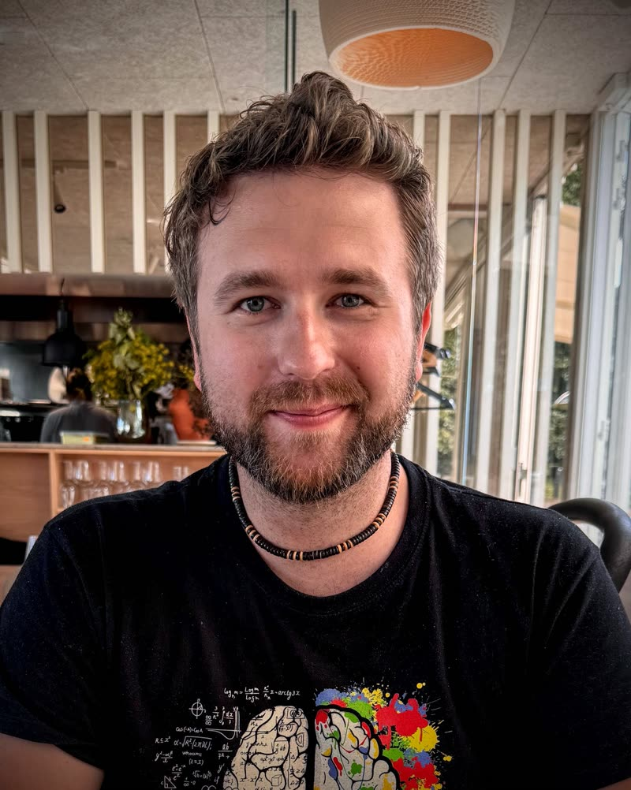

Curriculum Vitae

Jani Orbinski
Äänisuunnittelija, säveltäjä, äänitaiteilija ja muusikkoSound designer, composer, sound artist and musician
Teatteritaiteen maisteri (TeM)Master of Arts (Theatre and Drama)
Valitut työtSelected work
Rooli äänisuunnittelu, ellei toisin mainitaSound design unless otherwise noted
2026
- Aukeema – näyttämöessee hyperkyvykkyyden vaatimuksista
- Äänimerkin jälkeen – jälkikaikuja äänisuunnittelu, sävellyssound design, composition
- Tiedemuseo Liekki äänisuunnittelu, äänityssound design, recording
- Ihmisiksi töissä tuottaja, editointiproducer, editing
- Elämäsi koutsi
- Den lille prinsen äänisuunnittelu, sävellyssound design, composition
2025
- Meidän Syyriamme ohjaus, käsikirjoitus, äänisuunnitteludirection, script, sound design
- Pieniä hetkiä joissa elimme äänisuunnittelu, sävellyssound design, composition
- Valumisia sävellyscomposition
2024
- Mimmit ja Puhuri, Pakkasen poika äänisuunnittelu, editointisound design, editing
- Kaksi mummoa meni mustikkaan – toinen ei mahtunut äänisuunnittelu, Max/MSP-ohjelmointisound design, Max/MSP programming
- Tykkää ja jaa äänisuunnittelu, musiikkisound design, music
- Vuosi kauppakeskuksessa äänisuunnittelu, musiikki, kenttä-äänitys, ääninäytteleminensound design, music, field recording, voice acting
2023
- IT-kupla.net äänisuunnittelu, sävellyssound design, composition
- 8 klasaria
- Muu kuin mies mekossa
- Jad Hashmona
- Pakolaiskeskusteluja
- Unettomat
2022
- Kipeä esitys
- Penkkiurheilijat
- Sexiga byxor och andra problem Prix Europa -palkintoPrix Europa winner
- Kun mopopoika sai lapsen
- Inhimillisyyttä etsimässä
2021
- Mikko Silvennoisen euroviisut KOURA-kunniamainintaKOURA honourable mention
- Riskiretket
- Jos koskettaisin toisen penistä
- Kuinka populismi soi
- Cycle City
2020
- Ihmissyöjä
- Antti Holman oopperajuhlat KOURA-kunniamainintaKOURA honourable mention
- Tuokiokuvia neljän seinän sisältä
- Minun Venäjäni
- Harmonian ääriviivat
2019
- White Monkey
- Det som hände Liv
- Riivatut sydämet
- Anarkistipankkiiri
2018
- Kiinalaisia tarinoita
- Niin se käy yhdessä Riikka Karjalaisen kanssawith Riikka Karjalainen
- Maisemakuvia I
2017
- Rajavirhe / Russophobia
2016
- Kita
2015
- Kolme sisarta ohjaaja Katariina Numminendirector Katariina Numminen
- Perplex ohjaaja Janne Pellinendirector Janne Pellinen